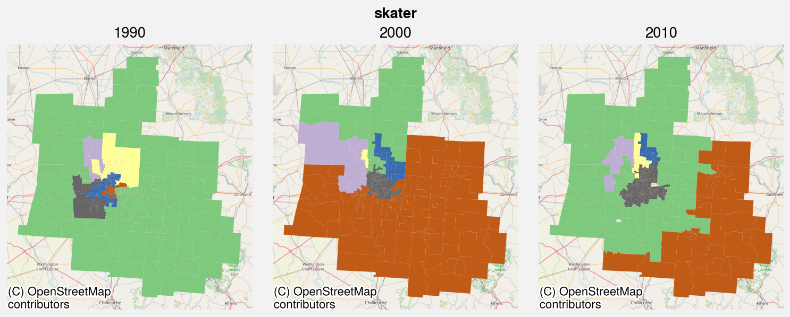
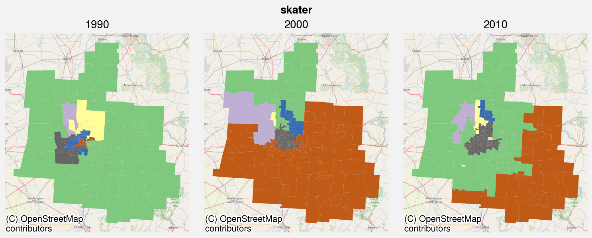

Modeling neighborhoods and neighborhood types¶
In the urban studies, the subfield of geodemographics focuses on the use of cluster analysis to identify a typology of prototypical neighborhoods in a study region. Meanwhile, the subfield of regionalization focuses on identifying contiguous groups of spatial units whose internal attribute structure is relatively homogenous. Whereas geodemographics are concerned primarily with summarizing and categorizing neighborhoods, regionalization is concerned primarily with identifying and delineating neighborhoods.
geosnap supports both of these goals by providing classic and spatial clustering algorithms as methods on the Community object
import os
import sys
import matplotlib.pyplot as plt
import seaborn as sns
from geosnap import Community, datasets
sns.set_context("notebook")
import warnings
warnings.filterwarnings("ignore")
Loading manifest: 100%|██████████| 3/3 [00:00<00:00, 2889.97entries/s] Loading manifest: 100%|██████████| 5/5 [00:00<00:00, 13662.23entries/s] Loading manifest: 100%|██████████| 5/5 [00:00<00:00, 10821.22entries/s] Loading manifest: 100%|██████████| 3/3 [00:00<00:00, 3319.15entries/s]
Modeling neighborhood types¶
To facilitate geodemographic and other neighborhood typologies, the geosnap.analyze module provides the cluster function, which is also implemented as a method on the Community class.
cluster takes a list of columns/variables, a clustering algorithm, and a number of clusters. It handles temporal clustering by splitting the dataset into decades and standardizing each variable, then re-pooling all the time periods back together before running the clustering algorithm on the full set of observations. This allows the distribution of each variable to evolve over time. It also allows neighborhood variables to move through different positions in the distrbution while providing a consistent set of clusters across time periods
columbusfips = datasets.msas()[
datasets.msas().name.str.startswith("Columbus, OH")
].geoid.values[0]
columbus = Community.from_ltdb(msa_fips=columbusfips)
columbus = columbus.cluster(
columns=[
"median_household_income",
"p_poverty_rate",
"p_edu_college_greater",
"p_unemployment_rate",
],
method="ward",
)
columbus.plot_timeseries(
"ward", years=[1990, 2000, 2010], categorical=True, cmap="Accent"
)
SubplotsContainer([CartesianAxesSubplot(0.0563557,0.351445;0.282221x0.591327), CartesianAxesSubplot(0.377369,0.351445;0.282221x0.591327), CartesianAxesSubplot(0.698383,0.351445;0.282221x0.591327)])

cluster returns a Community class with cluster labels appended as a new column on the underlying geodataframe. This makes it simple to visualize how the clusters have evolved in space over time
columbus.plot_timeseries(
"median_household_income", years=[1990, 2000, 2010], cmap="viridis"
)
SubplotsContainer([CartesianAxesSubplot(0.0563557,0.322186;0.282221x0.618005), CartesianAxesSubplot(0.377369,0.322186;0.282221x0.618005), CartesianAxesSubplot(0.698383,0.322186;0.282221x0.618005)])
Since cluster labels are appended to the input database, it’s also simple to compute and visualize statistics by cluster, even for variables that weren’t used to derive the clusters
columbus.gdf.groupby("ward")["p_nonhisp_white_persons"].median()
ward
0 92.849963
1 81.712362
2 26.917546
3 95.743874
4 94.202012
5 82.809803
Name: p_nonhisp_white_persons, dtype: float64
sns.violinplot(x="ward", y="p_nonhisp_black_persons", data=columbus.gdf, scale="count")
<AxesSubplot:xlabel='ward', ylabel='p_nonhisp_black_persons'>
types = ["kmeans", "affinity_propagation", "gaussian_mixture", "spectral", "hdbscan"]
Since there are many different clusting algorithms available, you can examine how their solutions differ for the same set of input variables
for algo in types:
columbus = columbus.cluster(
columns=[
"median_household_income",
"p_poverty_rate",
"p_edu_college_greater",
"p_unemployment_rate",
],
method=algo,
)
columbus.plot_timeseries(
column=algo,
years=[1990, 2000, 2010],
cmap="Accent",
categorical=True,
legend=False,
alpha=0.6
)


Modeling neighborhoods¶
If use use the cluster_spatial method instead of the classic cluster method, we adopt the regionalization approach, assuming that each observation in smaller than a single “neighborhood”, and aggregate them into bespoke neighborhoods that are internally similar.
Here again, we offer several different spatial clustering algorithms, each of which produces a distinct result
spatial_types = [
"azp",
"ward_spatial",
"skater",
"max_p",
] # spenc is temporarily removed
import contextily as ctx
sys.stdout = open(os.devnull, "w") # Disable printring because of max_p's diagnostics
for algo in spatial_types:
columbus = columbus.cluster_spatial(
columns=[
"median_household_income",
"p_poverty_rate",
"p_edu_college_greater",
"p_unemployment_rate",
],
method=algo,
)
columbus.plot_timeseries(
algo, cmap="Accent", years=[1990, 2000, 2010], categorical=True, legend=False,
alpha=0.5
ctxmap=
)

 


Examining Model Fit¶
Each time a cluster model is fitted to Community data, the results and some metadata are stored on the Community.models attribute, which is a dictionary keyed on the model name
for models with pooling==unique, the value in models is a dictionary of ModelResults keyed on year
columbus.models
{'ward': <geosnap.analyze.analytics.ModelResults at 0x7fd5b80d2f50>,
'kmeans': <geosnap.analyze.analytics.ModelResults at 0x7fd629944390>,
'affinity_propagation': <geosnap.analyze.analytics.ModelResults at 0x7fd6188aa450>,
'gaussian_mixture': <geosnap.analyze.analytics.ModelResults at 0x7fd66c0167d0>,
'spectral': <geosnap.analyze.analytics.ModelResults at 0x7fd649026bd0>,
'hdbscan': <geosnap.analyze.analytics.ModelResults at 0x7fd5b84c6310>,
'azp': {1970: <geosnap.analyze.analytics.ModelResults at 0x7fd6299e06d0>,
1980: <geosnap.analyze.analytics.ModelResults at 0x7fd6186e5150>,
1990: <geosnap.analyze.analytics.ModelResults at 0x7fd65906efd0>,
2000: <geosnap.analyze.analytics.ModelResults at 0x7fd6441c9650>,
2010: <geosnap.analyze.analytics.ModelResults at 0x7fd6441c94d0>},
'ward_spatial': {1970: <geosnap.analyze.analytics.ModelResults at 0x7fd659288410>,
1980: <geosnap.analyze.analytics.ModelResults at 0x7fd629304d10>,
1990: <geosnap.analyze.analytics.ModelResults at 0x7fd66c0d7590>,
2000: <geosnap.analyze.analytics.ModelResults at 0x7fd6396ec2d0>,
2010: <geosnap.analyze.analytics.ModelResults at 0x7fd628df0a90>},
'skater': {1970: <geosnap.analyze.analytics.ModelResults at 0x7fd5b861bd90>,
1980: <geosnap.analyze.analytics.ModelResults at 0x7fd648e58290>,
1990: <geosnap.analyze.analytics.ModelResults at 0x7fd644528f90>,
2000: <geosnap.analyze.analytics.ModelResults at 0x7fd5b85f8750>,
2010: <geosnap.analyze.analytics.ModelResults at 0x7fd5b85ef5d0>},
'max_p': {1970: <geosnap.analyze.analytics.ModelResults at 0x7fd66c037e10>,
1980: <geosnap.analyze.analytics.ModelResults at 0x7fd678e4a2d0>,
1990: <geosnap.analyze.analytics.ModelResults at 0x7fd678e39f50>,
2000: <geosnap.analyze.analytics.ModelResults at 0x7fd6290058d0>,
2010: <geosnap.analyze.analytics.ModelResults at 0x7fd629004e90>}}
For community of the entries in the models dictionary is an instance of the ModelResults class
dir(columbus.models["ward"])
['W',
'X',
'__class__',
'__delattr__',
'__dict__',
'__dir__',
'__doc__',
'__eq__',
'__format__',
'__ge__',
'__getattribute__',
'__gt__',
'__hash__',
'__init__',
'__init_subclass__',
'__le__',
'__lt__',
'__module__',
'__ne__',
'__new__',
'__reduce__',
'__reduce_ex__',
'__repr__',
'__setattr__',
'__sizeof__',
'__str__',
'__subclasshook__',
'__weakref__',
'boundary_sil',
'boundary_silhouettes',
'columns',
'instance',
'labels',
'model_type',
'nearest_label',
'nearest_labels',
'path_sil',
'path_silhouettes',
'sil_scores',
'silhouettes']
Each instance of ModelResults holds
the input data (
X),the resulting labels of each input geometry (
labels),the column names from the Community
gdfused to fit the model,the libpysal spatial weights matrix used in the model (
W) (if necessary)the fitted model instance itself (
instance) in case the analyst needs to pull any additional metadata from the object
and some additional silhouette and geosilhouette statistics that can be used to evaluate model fit.
Plotting Model Diagnostics¶
columbus.plot_silhouette("ward")
<AxesSubplot:title={'center':'Silhouette Analysis'}, xlabel='Silhouette coefficient values', ylabel='Cluster label'>

columbus.plot_silhouette("kmeans")
<AxesSubplot:title={'center':'Silhouette Analysis'}, xlabel='Silhouette coefficient values', ylabel='Cluster label'>

columbus.plot_silhouette("gaussian_mixture")
<AxesSubplot:title={'center':'Silhouette Analysis'}, xlabel='Silhouette coefficient values', ylabel='Cluster label'>
columbus.plot_silhouette_map("ward")
array([<AxesSubplot:>, <AxesSubplot:>], dtype=object)

For spatial models, or any cluster where temporal data are not pooled, include a year argument to see the model fit for that time period
columbus.plot_silhouette("ward_spatial", year=2000)
<AxesSubplot:title={'center':'Silhouette Analysis'}, xlabel='Silhouette coefficient values', ylabel='Cluster label'>

columbus.plot_next_best_label("ward")
array([<AxesSubplot:>, <AxesSubplot:>], dtype=object)
Spatial cluster models also have some additional visualization methods available based on geosilhouettes
columbus.plot_next_best_label("ward_spatial", year=2010)
array([<AxesSubplot:>, <AxesSubplot:>], dtype=object)

columbus.plot_boundary_silhouette("ward_spatial", year=2010)
array([<AxesSubplot:>, <AxesSubplot:>], dtype=object)

columbus.plot_path_silhouette("ward_spatial", year=2010)
array([<AxesSubplot:>, <AxesSubplot:>], dtype=object)